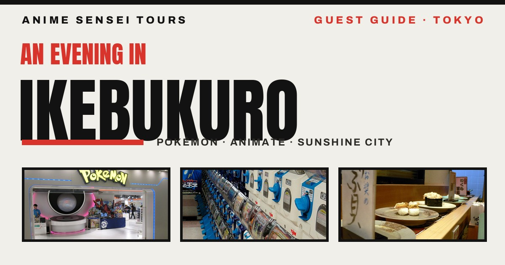
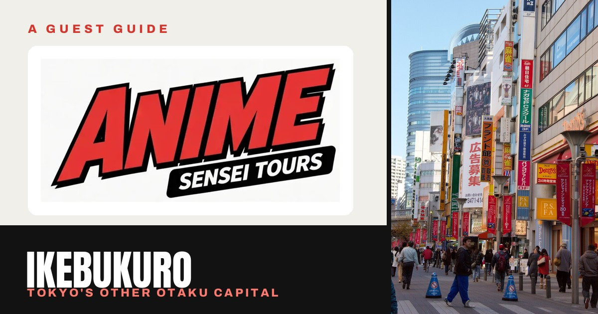
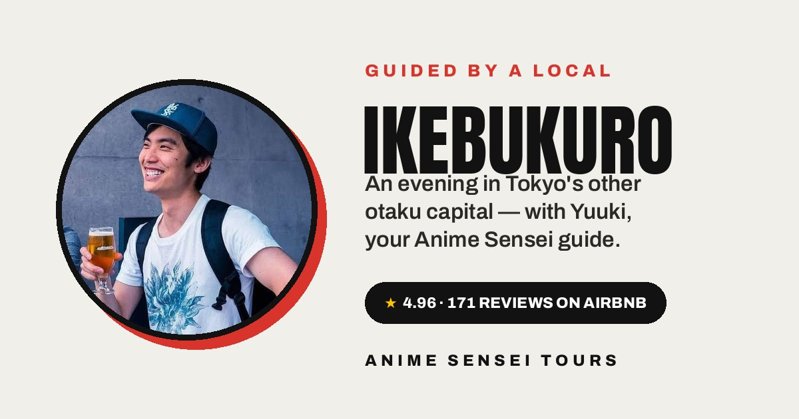
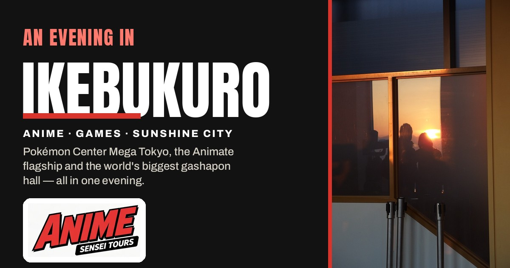

Ikebukuro Guide
OGP Options
Five share-image options for the Ikebukuro guest guide page, shown at real size (1200 × 630). The production page keeps its current og:image until a number is picked.
Pokémon Center–led three-photo collage (Pokémon Center Mega Tokyo, Animate flagship, Sunshine City atrium) over a paper title band with the Anime Sensei Tours logo chip.

Giant IKEBUKURO headline on paper with a red underline, above a black-framed film strip of Pokémon, gashapon and sushi photos.

Oversized Anime Sensei Tours logo on a white card beside an Ikebukuro street photo, with the title on a black band below.

Profile-forward: the guide's round face photo with a red offset shadow, the IKEBUKURO headline and a ★ 4.96 · 171 reviews on Airbnb pill.

Dark version: black background, white headline with red underline, observatory sunset silhouettes on the right and the logo chip at the foot.
